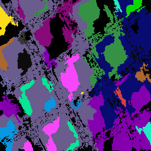
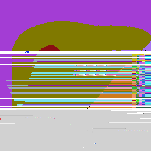

This Texture Does Not Exist
About
First of April 2019Over the past month I have been learning about neural networks, and I tired my hand at one. So here it is, my project that I have been working so hard on. It's not fully finished, but I'm still proud of it.
 I made it by feeding it 1,500 textures from computer games, from Super Mario, Sonic, and Commander Keen to blood-drenched games like Doom, Quake, and Grand Theft Auto. The idea of the network was it would make new textures that they could fool a person, and make them think that it really was from a computer game. Of cause, as you can see, it didn't really work out well, as in the end, the textures ended up not being in colour, but in black and white. There are two main reasons behind this; one, it would take around an hour to fully render one image (you were also unable to do anything else with your computer while waiting), and second, when they were fully finished, they were rather broken.
 On the other hand, I could make them in black and white, as that would only take seconds to render (just reload this web page to test it!), and the images shown aren't a broken mess.
For the curious you can see two early version of the colour versions; the top image seems... alright, but the bottom is straight out broken in places, and just to rub salt into the wound, it would take (according to my maths skills) 42 days for the neural network to make even one texture that would look even half decent.
But look, am I happy with what came out? Yes, very much so, I am very, very happy, and for my first job with neural networking, I think I did amazing, I am over the moon. I wish someone was with me when the first, crappy image was made, I kid you not, I jumped up on my feet, and ran around my room like a fool, it was great!
Cass Python